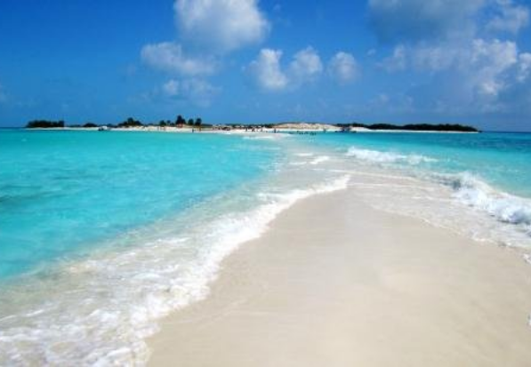
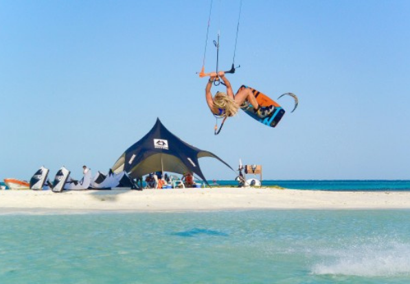
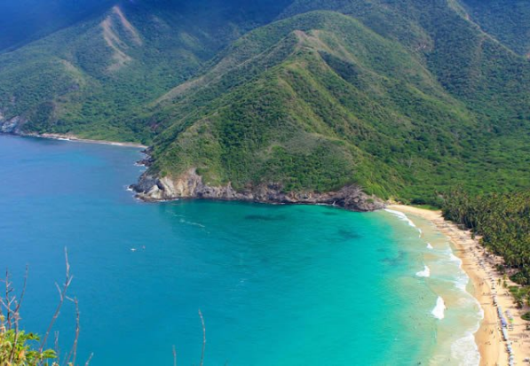
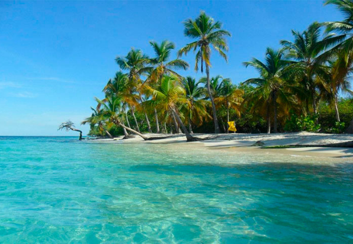
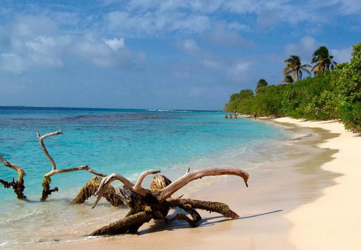
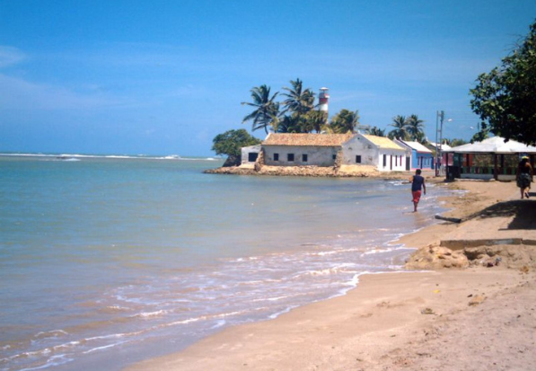
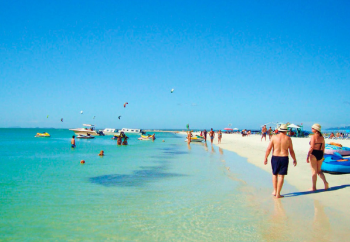
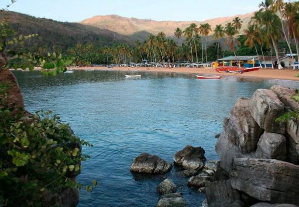
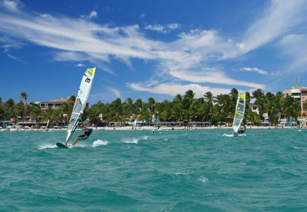
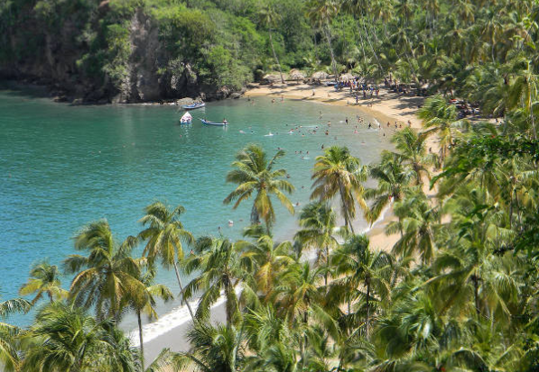

En Venezuela existen innumerables playas hermosas capaces de dejar sin aliento a todos los turistas, entre ellas podemos destacar:
Playas

Cayo de Agua
Al este del mar Caribe que geográficamente pertenece al Archipiélago Los Roques23 y administrativamente está organizado como parte de la Dependencias Federales, Venezuela,4 además de ser parte del parque nacional del mismo nombre5 y del Territorio Insular Miranda, el nombre de este cayo tiene su origen en el hecho de tener pozos de agua dulce dentro de él.

Franciski
Debido a su cercanía a Gran Roque se han convertido en un popular destino turístico, siendo una de las mayores atracciones del archipiélago con sus playas de arena blanca y una piscina natural. Se practica el buceo, el snorkeling y el kitesurfing.

Choroni
Playa Grande, aunque normalmente se le conoce como Choroní por la población en la que se encuentra, a unos 50 kilómetros de la ciudad de Maracay. Se ubica dentro del Parque Nacional Henry Pittier, mostrando aguas azules y tranquilas. El dorado de sus arenas impacta a la vista conjuntamente con la vegetación que la rodea. Las opciones de alojamiento son en las casas coloniales del pueblo.

La Ciénaga
En la localidad de Ocumare de La Costa se encuentra una playa muy concurrida que atrae por lo cristalino de sus aguas. La poca profundidad la convierten en una alternativa segura para ir con niños. Es ideal para contemplar la naturaleza, bañarse o realizar un paseo en kayak por los manglares del Parque Nacional Henry Pittier. Hay también una piscina natural y en el trayecto, que normalmente se hace en lancha, puedes notar como las olas se estrellan contra las rocas produciendo un bonito efecto visual y sonoro.

Cayo Sombrero
Corresponde a una de las paradisiacas islas del Parque Nacional Morrocoy, sitio famoso por sus espectaculares paisajes submarinos e idílicas playas de arenas blancas y aguas turquesas. Si bien cada una de sus playas, merecería un capítulo aparte, destaca la belleza de Cayo Sombrero, un escenario idílico donde convergen arenas blancas, aguas turquesas, bosques de palmeras y privilegiados fondos marinos de baja profundidad, donde realizar snorkeling, entre corales y peces de colores.

Adicora
Al norte del estado Falcón y en la península de Paraguaná se encuentra esta pequeña población que tiene bonitas playas, varias de ellas ideales para la practica de deportes acuáticos por los vientos que soplan. Se puede dividir en las zonas sur (con mayor viento) y norte (las más tranquilas). Los turistas la buscan por la calidez de sus aguas cristalinas y la poca profundidad que tienen.

Isla de Coche
Al sur de la Isla de Margarita se encuentra esta tranquila playa de aguas tranquilas y arena blanca. Es reconocida por las facilidades para la práctica de deportes acuáticos, tales como windsurf y kitesurf. La inmensidad se pierde en el infinito, siendo el lugar donde se concentra gran parte del turismo y es una buena opción para ir en familia.

Playa Colorada
Esta playa corresponde a una de las playas del Parque Nacional Mochima, sitio de espectaculares escenarios, donde convergen islas, playas, bahías y ensenadas, algunas prácticamente vírgenes, rodeadas por inmensas montañas. Playa Colorada, es una de sus playas más famosas, un paraje idílico, con finas arenas rojizas, tranquilas aguas cálidas, ideales para la práctica de deportes acuáticos y exuberantes entornos de bosque tropical, donde descansar a la sombra de enormes cocoteras.

Playa El Yaque
La playa El Yaque es una de las principales playas de la isla de Margarita. Está ubicada detrás del aeropuerto de Margarita, a cinco minutos del mismo; lo que hace que sea uno de los lugares más turísticos de la isla; es preferido tanto por los amantes de los deportes acuáticos, como por las familias; ya que cuenta con aguas de poca profundidad y una ubicación privilegiada.

Playa Medina
Playa Medina se ha ganado a pulso es reconocimiento de ser una de las mejores y más bellas playas del mundo. Su aspecto paradisíaco la hace inolvidable, con las palmeras rozando casi el agua. A los lados, sendas colinitas repletas de vegetación que le dan un aire todavía más salvaje y puro. Desde el agua, si nos damos la vuelta, veremos, tras la orilla, la vegetación espesa que llega hasta la carretera.